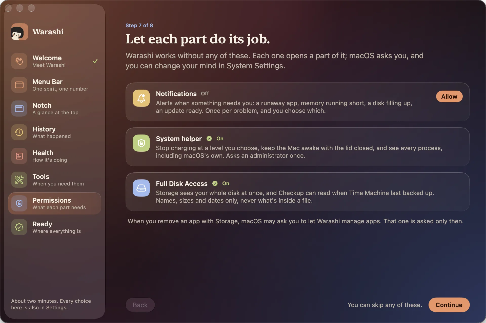
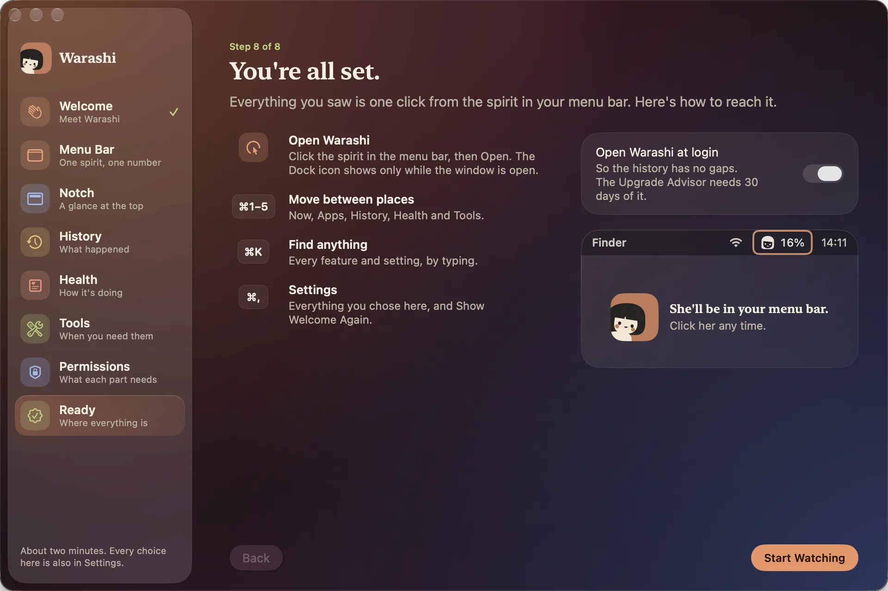

Gdy Warashi otwiera się po raz pierwszy, krótka prezentacja oprowadza Cię po aplikacji. Lista po lewej to ta sama mapa co w oknie Warashi, więc od razu wiesz, gdzie co jest; kliknij dowolny krok, by do niego przejść. Każda strona pokazuje prawdziwy element na żywo, jak do niego dotrzeć i wybór, o który prosi. U dołu użyj Dalej i Wstecz. Zajmuje to około dwóch minut, a każdy wybór można później zmienić w Ustawieniach.
- Witaj
Czym jest Warashi i cztery obietnice: Twoja historia zostaje na Twoim Macu, nie ma konta ani nic do ustawiania na start, prosi tylko o to, czego potrzebuje dana funkcja, a anonimowe statystyki użycia pomagają je ulepszać. Kliknij Oprowadź mnie.

Strona 1: Poznaj Warashi. - Pasek menu
Wskaźnik klika ikonę Warashi i pod nią otwiera się prawdziwe okno paska menu. Wybierz liczbę wyświetlaną obok duszka: CPU, pamięć, GPU, zasilanie, temperaturę, sieć, dysk, baterię albo samego duszka. Pokazuj, co wymaga uwagi pozwala liczbie zmienić się w ostrzeżenie (na przykład
▲ MEM 29 GB), gdy brakuje pamięci lub Mac jest gorący. ⌘K znajduje każdą funkcję lub ustawienie po wpisaniu nazwy.
Strona 2: ikona na pasku menu i jej okno. - Wycięcie
Prawdziwe wycięcie otwiera się w pulpit, gdy zbliża się wskaźnik. Włącz Podgląd obok wycięcia, by widzieć dwie liczby obok wycięcia MacBooka, oraz Wyspa na innych monitorach, by na ekranach bez wycięcia pojawiła się mała pigułka. Wskaż którekolwiek, by zobaczyć pulpit; kliknij, by otworzyć Warashi.

Strona 3: wycięcie i wyspa. - Historia
Przykładowy dzień w Dzienniku pokładowym: uśpienia, spowolnienia, awarie i ładowanie, zapisywane na bieżąco. W Historii możesz kliknąć dowolną chwilę, by sprawdzić, co się wtedy działo. Włącz Zapisuj aplikację na pierwszym planie, by zobaczyć, jak długo używasz każdej aplikacji i ile to kosztuje; zapisywane są tylko przełączenia aplikacji, bez tytułów okien, stron internetowych i naciśnięć klawiszy, a funkcja jest wyłączona, dopóki jej nie włączysz.

Strona 4: Historia, Dziennik pokładowy i zapis aktywności (opcjonalny). - Kondycja
Karta limitu ładowania z okna paska menu i Twój dysk jako pierścień. Kondycja › Kontrola podsumowuje w jednym zdaniu, jak ma się Twój Mac, na podstawie danych z tygodnia; Dlaczego mój Mac zwalnia? obserwuje przez dziesięć sekund i wskazuje przyczynę; Kondycja › Miejsce na dysku pokazuje cały dysk i usuwa aplikacje razem z tym, co po sobie zostawiły, najpierw do Kosza.

Strona 5: Kondycja. - Narzędzia
Wszystkie narzędzia Warashi, każde ze swoją ikoną: Nie usypiaj (na godzinę, do końca pobierania lub przy zamkniętej pokrywie), Przerwy dla oczu i postawy, szybkość internetu i dysku, Wi-Fi, czyszczenie ekranu lub klawiatury i więcej. Każde działa tylko wtedy, gdy o to poprosisz. Zobacz Narzędzia.

Strona 6: Narzędzia. - Uprawnienia
Warashi działa bez żadnego z nich; każde odblokowuje jakąś jego część. Każda karta mówi, do czego służy i czy jest Wyłączony, Prawie gotowe czy Włączony, a strona zauważa, gdy tylko coś włączysz w Ustawieniach systemowych.
- Powiadomienia: naciśnij Zezwól, a macOS zapyta jeden raz. Potrzebne do alertów.
- Narzędzie systemowe: naciśnij Włącz, a potem włącz Warashi w Ustawieniach systemowych › Ogólne › Rzeczy i rozszerzenia otwierane podczas logowania (administrator zatwierdza to raz). Dzięki temu Warashi może zatrzymać ładowanie na dowolnym poziomie, nie usypiać Maca przy zamkniętej pokrywie i widzieć procesy samego macOS.
- Pełny dostęp do dysku: naciśnij Otwórz Ustawienia systemowe i włącz Warashi na liście albo przeciągnij tam ikonę. Miejsce na dysku widzi wtedy cały dysk naraz, a Kontrola może odczytać, kiedy Time Machine ostatnio wykonał kopię zapasową. Tylko nazwy, rozmiary i daty, nigdy zawartość plików. Jeśli macOS zastosuje zmianę dopiero po ponownym uruchomieniu Warashi, naciśnij Otwórz Warashi ponownie: prezentacja wróci do tej strony.
Każde z nich można pominąć. O Zarządzanie aplikacjami Warashi tu nie prosi: macOS zapyta o nie dopiero wtedy, gdy usuniesz aplikację w sekcji Miejsce na dysku.

Strona 7: Uprawnienia (każde opcjonalne). - Gotowe
Jak dotrzeć do wszystkiego: kliknij duszka, a potem Otwórz; ⌘1–5 przełącza między Teraz, Aplikacjami, Historią, Kondycją i Narzędziami; ⌘K znajduje cokolwiek; ⌘, otwiera Ustawienia. Włącz Otwieraj Warashi podczas logowania, aby historia nie miała luk (Doradca zakupu potrzebuje jej z 30 dni), a potem kliknij Rozpocznij monitorowanie.

Strona 8: gdzie co jest, a potem Rozpocznij monitorowanie.
Gdy coś nie działa
- Otwieranie podczas logowania się nie utrzymuje: macOS może wymagać Twojego zatwierdzenia. Otwórz Ustawienia systemowe › Ogólne › Rzeczy i rozszerzenia otwierane podczas logowania i zezwól Warashi.
- Narzędzie systemowe pokazuje Prawie gotowe: otwórz Ustawienia systemowe › Ogólne › Rzeczy i rozszerzenia otwierane podczas logowania i włącz Warashi w sekcji Pozwalaj w tle.
- Pełny dostęp do dysku jest włączony, ale karta pokazuje Wyłączony: naciśnij Otwórz Warashi ponownie.
- Prezentacja się nie pojawiła: otwórz Warashi z Aplikacji, a potem Ustawienia › Ogólne › Pokaż powitanie ponownie.
Więcej w sekcji Rozwiązywanie problemów lub napisz na adam@warashi.app.